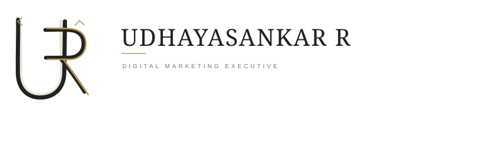
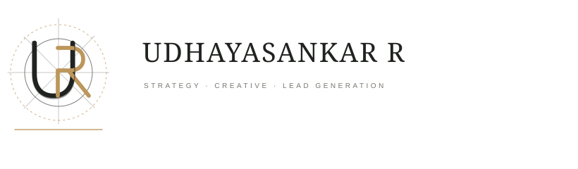
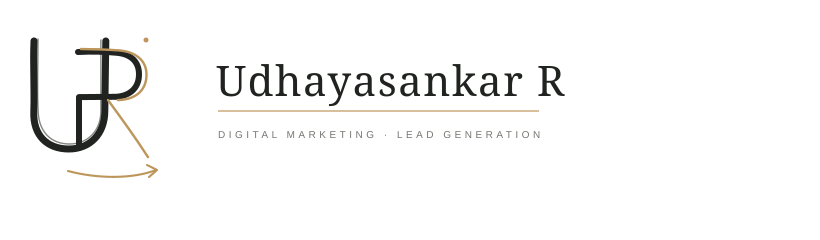

01 / INTERLOCK PENCIL + GOLD DETAIL

Three original U + R directions, shown on a sketchbook-style board with construction marks and a warm graphite-and-gold palette.



Udhayasankar R · Digital Marketing Executive